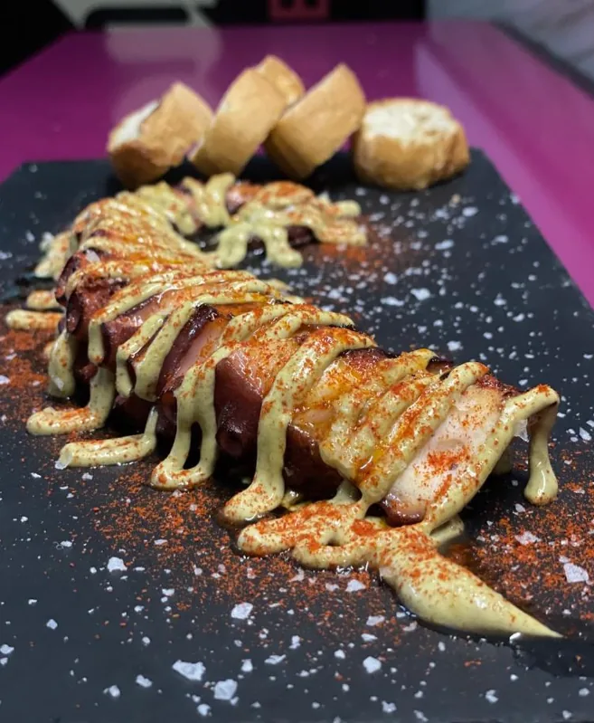
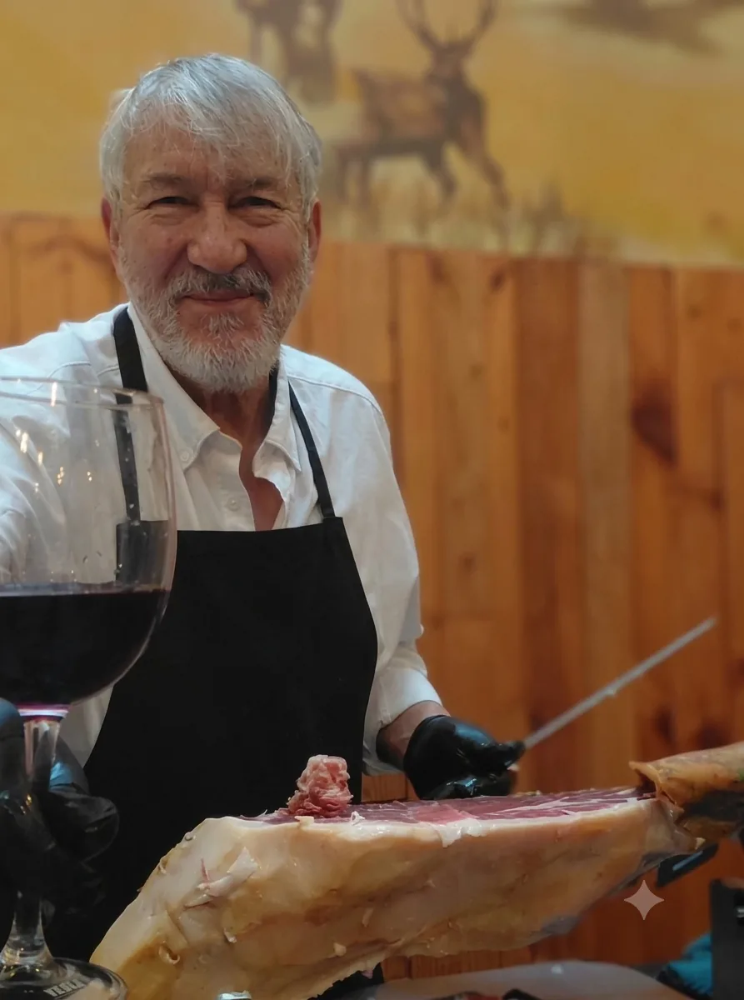
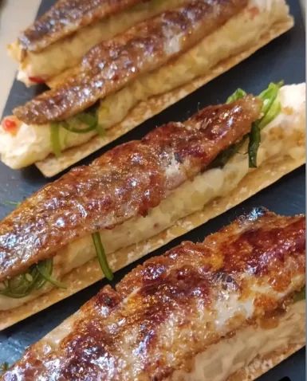

Recomendado

Seleccionamos cada día el mejor género, lo llevamos a la brasa con calma y lo servimos con el trato cercano de una comida en casa.
— Tomás José, TJ · La Taberna del Herrero

La comida sorprende por su calidad y sabor: platos bien elaborados, con producto fresco y presentaciones cuidadas. El ambiente es acogedor y moderno.
Google · Yecla
Tomás y su familia son espectaculares. Indispensable pedir la marinera gratinada y la cecina. ¡Volveremos!
Google · Yecla
Las vieiras y los berberechos espectaculares. El trato, cercano y muy profesional. Muchas gracias, volveremos seguro.
Google · Yecla
Elige día y hora y te guardamos sitio en la terraza, junto a la chimenea o en el comedor privado.